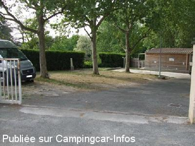
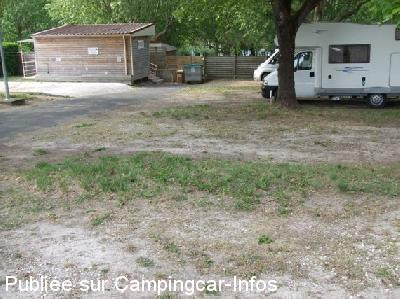
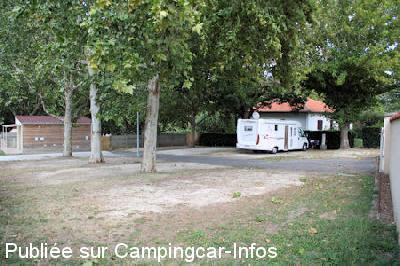

AC = Camping acceptant les camping-cars de :
BERGERAC
(N° 111)
Accès/adresse :
8 bis rue Jean-Jacques Rousseau
Camping municipal La Pelouse **
24100 BERGERAC
Camping municipal La Pelouse **
24100 BERGERAC
Latitude : (Nord) 44.84891° Décimaux ou 44° 50′ 56′′
Longitude : (Est) 0.47635° Décimaux ou 0° 28′ 34′′
Tarif : 2014
C-C, emplacement, 2 personnes : 15,21 à 19,31 €
Personne + 7 ans : 4 €
Enfant - 7 ans : 2,90 €
Électricité : 3,90 €
Animal : 1,40 €
Taxe de séjour : 0,22 €
Lave-linge ou sèche-linge : 3,90 €
Wifi gratuit
Type de borne : Autre
Services :


Accès handicapés
Jeux
Autres informations :
Ouvert du 01/04 au 31/10
60 emplacements
Tel + 33 (0)553 570 667
A 10 Mns du centre ville à pied campinglapelouse24@orange.fr
http://www.bergerac-tourisme.com/Camping-La-Pelouse

Le 29/04/2011 par roubiac

Le 29/04/2011 par roubiac

Le 27/09/2010 par Papou26
de
Dandunord
le 06/11/2015 :
Nous avons passé 2 nuits dans ce camping très calme du 22 au 24 octobre 2015.
Il est situé au bord de la Dordogne sur la rive opposée à la vieille ville qui se trouve à environ 15 mn à pieds.
Les sanitaires sont très propres et surtout très bien chauffés en cette saison.
Nous avons passé 2 nuits dans ce camping très calme du 22 au 24 octobre 2015.
Il est situé au bord de la Dordogne sur la rive opposée à la vieille ville qui se trouve à environ 15 mn à pieds.
Les sanitaires sont très propres et surtout très bien chauffés en cette saison.
de
JCL
le 01/09/2014 :
Y sommes passés début aout. Pour une nuit ça permet une visite de la ville assez proche et disons le sans intérêt . L'espace camping est correct tout comme les services et le tarif.
Y sommes passés début aout. Pour une nuit ça permet une visite de la ville assez proche et disons le sans intérêt . L'espace camping est correct tout comme les services et le tarif.
de
Martine C.
le 16/09/2013 :
Avons séjourné en Août afin de pouvoir visiter la ville de Bergerac située tout près de ce camping, accessible à pied, séjour avec les canards le long de la Dordogne. Camping prisé en Août (comme c'est souvent le cas ailleurs aussi), et accueillant. Nuit tranquille
Avons séjourné en Août afin de pouvoir visiter la ville de Bergerac située tout près de ce camping, accessible à pied, séjour avec les canards le long de la Dordogne. Camping prisé en Août (comme c'est souvent le cas ailleurs aussi), et accueillant. Nuit tranquille
de
Alain et Gilles
le 20/03/2012 :
A la recherche d'une aire municipale (signalée dans d'autres guides ...mais qui n'existe plus !) et détournés sur un camping non ouvert !!! Dommage pour cette belle ville qui pourrait organiser un accueil "toutes saisons" car l'hiver (le 15 mars !!!) vous devrez zapper cette ville. Les infos de CampingCarInfo sont bien actualisées et c'est l'intéret de ce site INTERACTIF qui merite d'être félicité. Belles ballades à tous ...
A la recherche d'une aire municipale (signalée dans d'autres guides ...mais qui n'existe plus !) et détournés sur un camping non ouvert !!! Dommage pour cette belle ville qui pourrait organiser un accueil "toutes saisons" car l'hiver (le 15 mars !!!) vous devrez zapper cette ville. Les infos de CampingCarInfo sont bien actualisées et c'est l'intéret de ce site INTERACTIF qui merite d'être félicité. Belles ballades à tous ...
de
jerome
le 09/04/2005 :
Nous avons passés 2 nuits dans le camping .
tres accueillant .
sI TOUS LES CAMPINGS POUVAIENT ETRES COMME CELA !!!
Nous avons passés 2 nuits dans le camping .
tres accueillant .
sI TOUS LES CAMPINGS POUVAIENT ETRES COMME CELA !!!
de
Boris
le 23/08/2004 :
Le camping n'est pas de grande capacité, heureusement que le gérant est très arrangeant lors des grandes affluences.
Camping super en bordure de la Dordogne,seul petit bémol : le concert des milliers degrenouilles la nuit (j'ai eu le temps de les compter) et elles ont du coffre.
Le camping n'est pas de grande capacité, heureusement que le gérant est très arrangeant lors des grandes affluences.
Camping super en bordure de la Dordogne,seul petit bémol : le concert des milliers degrenouilles la nuit (j'ai eu le temps de les compter) et elles ont du coffre.